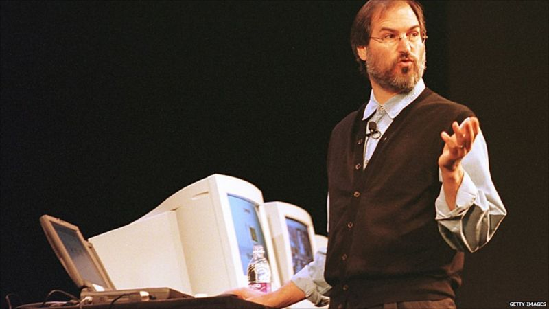

Steve Wozniak
Conheça a jornada de Steve Wozniak, o engenheiro visionário que co-fundou a Apple e transformou a indústria da tecnologia e sua notoriedade como uma estrela pop e filantropo.


Next Computer
Descubra como a visão de Jobs e a Tecnologia da NeXT redefiniram o futuro da Apple e influenciaram a evolução da indústria de tecnologia.
O lançamento do Netx Computer e o fracasso de vendas.

O retorno de Jobs a Apple que salvou a empresa da falência.
Steve Wozniak, ensinando crianças a como utilizar um computador em 1993.